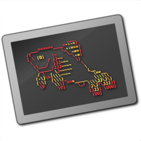
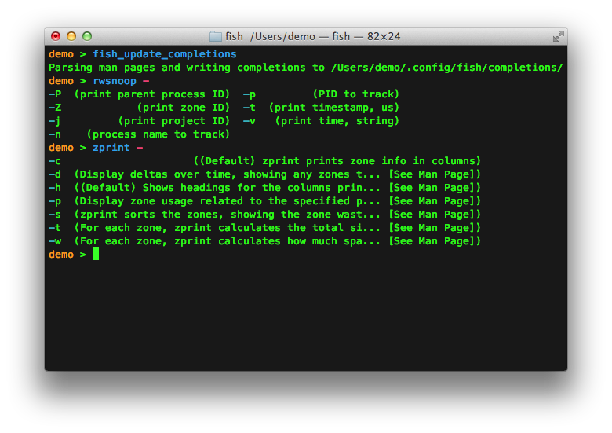

Finally, a command
line shell for the 90's
fish is a smart and user-friendly command lineshell for OS X, Linux, and the rest of the family.
Autosuggestions
fish suggests commands as you type based on history and completions, just like a web browser. Watch out, Netscape Navigator 4.0!Glorious VGA Color
fish natively supports term256, the state of the art in terminal technology. You'll have an astonishing 256 colors available for use!

Sane Scripting
fish is fully scriptable, and its syntax is simple, clean, and consistent. You'll never writeesac again.
Web Based configuration
For those lucky few with a graphical computer, you can set your colors and view functions, variables, and history all from a web page.

Man Page Completions
Other shells support programmable completions, but only fish generates them automatically by parsing your installed man pages.Works Out Of The Box
fish will delight you with features like tab completions and syntax highlighting that just work, with nothing new to learn or configure.


Go fish

fish-2.2.0.tar.gz

./configure; make; sudo make install
File size: 2.2 MB
SHA1: cd7935b3301444afa88afb272d8db5542085c9f2
Release History
- 2.2.0, released July 12, 2015
- 2.1.2, released February 24, 2015 (tarball)
- 2.1.1, released September 26, 2014 (tarball - note that there are known issues on OS X)
- 2.1.0, released October 28, 2013 (tarball - note that there are known security vulnerabilities)
- 2.0.0, released May 17, 2013 (tarball - note that there are known security vulnerabilities)
Development
fish development is hosted on github. To clone the git repository:
git clone git://github.com/fish-shell/fish-shell.git
Build instructions are provided at the bottom of the github page.
Contact Us
- Questions, comments, rants and raves can be posted to the official fish mailing list.
- Found a bug? Have an awesome idea? Please open an issue on the github page.
- You can e-mail ridiculous_fish directly at corydoras@ridiculousfish.com.